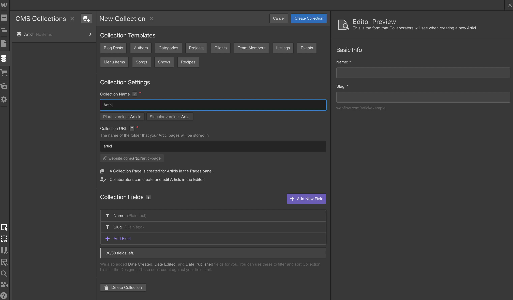

Webflow feels magical.
Go ahead, roll your eyes. I get it. I just called software magical.
But let me explain.
The big innovation with Webflow is their Designer tool. It gives you the flexibility of front-end coding without requiring you to actually code.
Now notice I said front-end coding. Front-end coding is basically the presentation of your website. It’s how it looks and feels. It’s the HTML, CSS and some Javascript. That’s where it gives you flexibility.

Webflow's designer tool.
So how does Webflow do this? How did they build a design tool that gives the flexibility of code without actually having to code?
Well, like most things that feel magical, there’s actually a logical explanation behind it.
Webflow At A Glance
-
No Code
The Designer tool is like a UI for front-end code. It has a learning curve but allows you to create with the same flexibility as front-end coding.
-
CMS
Webflow includes a complete CMS that let's you create custom collections made up of different field types.
-
Whitelabel Editor
The Editor tool is an easy way for anyone to update content— perfect for handing off to a client or team.
Table of Contents
What Makes Webflow Unique
Webflow is the result of a thoughtful, coherent and frankly, novel vision.
To start, Webflow doesn’t shy away from the complexity of code. Instead it embraces it.
So for example, you might be surprised when you add your first paragraph element to a page. Once you add it you’ll see it just sits there, lamely spanning the width of the screen:
This paragraph element is just lamely spanning the width of the screen.
Web developers will understand what’s happening here but non-coders probably won’t. Basically to constrain the width of this element, it needs to be placed within a container.

Adding a container will constrain the width of the paragraph.
This is a fundamental concept of web design. It’s called the box model. Webflow doesn’t abstract away from the concepts like the box model because the whole point of Webflow is to embrace the complexity of front-end code. (After all, it’s the complexity of code that enables the flexibility of code.)
In many ways the Webflow Designer is really just a visual interface for front-end coding.
For example you add HTML elements:
These are HTML elements that you add to your page.
Then elements are styled on the sidebar with options that match CSS styles:
Web developers will recognize the options in the style sidebar— they all map to CSS.
Because of this, you’re really able to design just about anything in Webflow— there’s not a lot of constraints.
This makes it a categorically different tool than website builders like Squarespace or Wix. Squarespace and Wix aren’t designed for you to have complete freedom. They provide templates and smart defaults— they abstract you away from the complexity of code and as a result are much easier to use.
Webflow on the other hand doesn’t start you off with a template and has a much steeper learning curve BUT you can do way more with it.
You really need to learn the fundamentals of web design to use Webflow. This includes concepts like style hierarchy, box model, floating, absolute and relative positioning and other basic web fundamentals.
If you’ve never heard these concepts before they’ll probably sound pretty intimidating. But if you’re a reasonably tech savvy person and you give yourself a couple hours in the Webflow University you might surprise yourself at how much you can learn— there’s an underlying order and logic to these concepts.
The Webflow university.
CMS
On its own, Webflow’s Designer is really flexible. It’s a great way to build static websites. But what takes Webflow to the next level is when you integrate CMS and ecommerce with the Designer.
The CMS lets you create collections. Collections are custom content types. Think of them like a database.
Creating a collection.
Collections are made up of fields— for example: plain text, images, dates, colors and even Rich Text, which gives you a full WYSIWYG editor.
Collections are made up of fields.
So for example, we could create a collection of articles. We’ll say articles have a headline, date, permalink and content:
Our article collection.
Then we can begin adding adding articles. We’ll add two:
We've added two articles.
From there we can go back to the Designer add a list of articles using the Collection List element:
Integrating our CMS into the Designer.
You can even create multiple collections with relationships. For example, you could create an author collection and then add it as a relationship to the articles. That way articles can have authors.
Webflow’s CMS is great but it isn’t necessarily ground-breaking. The ground-breaking thing is that you can plug the CMS content into the Webflow Designer— which means you don’t even need to code to do any of this.
As a web developer, it kind of blows my mind how fast I can scaffold up a CMS and website with Webflow. People pay a lot of money to hire people to do this— but Webflow makes it very accessible.
I’ve seen the Webflow CMS power all kinds of websites:
Failory is an archive of failed startups. You can see how it each company is an entry a collection:
Failory
Flowbase is a marketplace for Webflow templates:
Flowbase
And Bonsai used it to build a blog:
Bonsai
Ecommerce
In addition to a CMS, you can also integrate ecommerce into the Designer.
Ecommerce enables two new collections: products and categories. Both work similar to CMS collections (for example, you can add custom fields) but they have a few special fields that are required for ecommerce.
An example product page.
Once you add a few products you create pages around those products just like you would a CMS collection.
Ecommerce also automatically gives you checkout and shopping cart pages that you can style.
Like the CMS, Webflow’s ecommerce features aren’t exactly ground-breaking. For example, Webflow will never match Shopify’s ecommerce features but that’s not the point. The ground-breaking thing is that ecommerce can be plugged into the Webflow Designer— and Shopify doesn’t have Webflow’s awesome Designer tool.
For Clients & Teams
A quick note about Webflow’s Editor.
Webflow also includes an editor interface that allows you to browse the website and change text and images— it also lets you access the CMS. This is a handy thing to hand off to clients or a team.

Using the Editor.
Conclusion
I am super impressed with Webflow. I honestly can’t wait to see where it goes from here— but I did occasionally run into limitations.
For example, I wasn’t able to add fonts from Typography.com— my webfont selection was limited to Google Fonts and Typekit.
I also found limitations in the CMS that keep me from moving some of my bigger projects to Webflow— for example, I would love to be able to reorder content relationships or have more control over the permalink structure.
I would love to be able to re-order this relationship field.
But I do appreciate that Webflow has a Wishlist area where the community can vote and discuss new features. So Webflow is aware of what people are asking for.
But you could argue these are petty limitations. I’ve been coding websites for almost two decades and I’ve probably built up a sense of entitlement over what I should be able to do. Because the reality is that you can do an awful with just Webflow.
The main thing to acknowledge is that Webflow has a learning curve. You really need to understand the fundamentals of web design to use Webflow. I don’t want to dissuade you— if you put your mind to it, you can learn these things. But Webflow definitely has a steeper learning curve than something like Squarespace.
Even with my background as a web developer I find that some things became more confusing in Webflow— for example, I found it difficult to manage all my CSS classes. At times I wished I could code a stylesheet. I was just generating too many CSS classes.
But overall Webflow is definitely offering a new approach to building websites without code— and at the heart of it’s innovation is the Designer tool. When you mix the Designer with Ecommerce and CMS you get something that is truly new and interesting. I can’t wait to see what else they built on top of this.
Webflow's designer tool is what enables the new.
Webflow is clear about what their enemy is: their enemy is code.
They started a No Code Conference, their CEO habitually proselytizes about the no code movement and their homepage promises that you can “Break the Code Barrier”.
All this hype may make you a bit skeptical. I know I came into this review skeptical— but I’ve sincerely converted into a believer.
Webflow is not going to be for everybody— it definitely has a learning curve— but for those willing to learn, it’s going to be hugely powerful.
Related Articles:
-
GoDaddy Website Builder Review
GoDaddy has aggressively improved their website builder over last few years— it's now a solid package.
-
Shopify Review
Through intuitive software and innovative features, Shopify has become the best ecommerce website builder.
-
Squarespace Review
Is Squarespace the best website builder? What are the pros and cons? Read on for the answers!
-
Weebly Review
Weebly is an excellent, easy to use website builder that is also going through a transition.
-
Wix Review
Everything you should know about choosing Wix as your website builder.